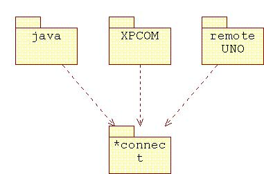
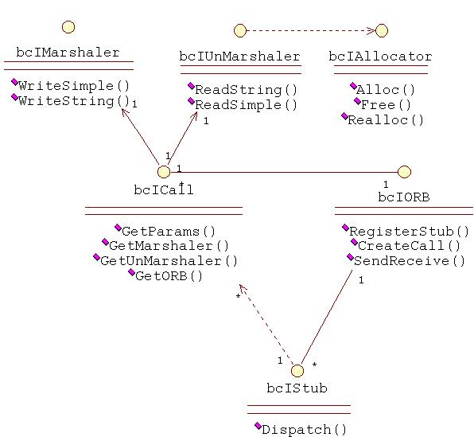
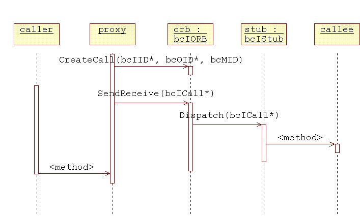
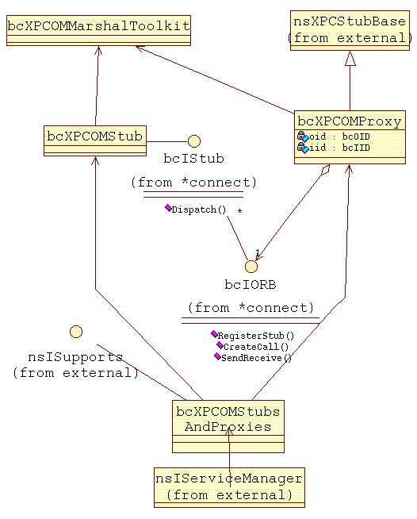
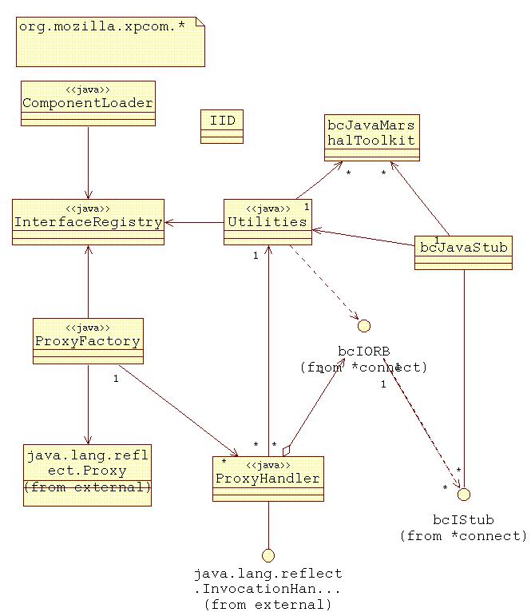
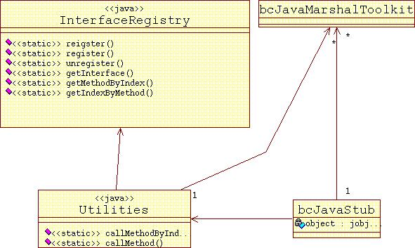

Design info for BlackConnect Implementation Version 1.1
(This document can be found at http://www.mozilla.org/projects/blackwood/connect/design.html )Table of Contents
Introduction
This document is an engineer's overview of BlackConnect project design.
-
Design Principles
BlackWood group has two XPCOM connectivity projects:- XPCOM to Java (BlackConnect)
- XPCOM to UNO (UnoConnect)
These projects have similar issues dealing with XPCOM: threading, exceptions, memory handling, security model, out of process calling, etc. (Take a look at BlackConnect reqs and specs). It would be good to be able to solve problems once for both projects. It would be even better to address these issues for future XPCOM connectivity projects.
Here is a proposed solution: Instead of implementing XPCOM to JAVA and XPCOM to UNO we will implement XPCOM to *Connect (XPCOM module), Java to *Connect (Java module) and *Connect to UNO (UNO module). All issues related to XPCOM will be solved in XPCOM module, issues related to java in java module and the same for uno module. *Connect will be connect point for different languages/environments. It will hide languages specific details and implementation.
You can find UML description of the project here
Source Code Directory
This section explains the source code directory structure, and what is
available in each directory. All paths are relative to
mozilla/java/xpcom. Directories are examined
depth-first.
- connect
This is the root of the *connect module- public
*Connect interfaces - src
*Connect implementation - xpcom
XPCOM wrapper service for bcIORB
- public
- java
This is the root of the java module- classes/org/mozilla/xpcom
Java implemented part of java module. - src
c++ implemented part of java module - loader
bcJavaComponentLoader implementation
- classes/org/mozilla/xpcom
- xpcom
This is the root of the xpcom module
Modules
-
*Connect module
The following UML diagram shows the interfaces of *Connect module

The following UML diagram shows invocation scenario

Here are key items: bcIStub, bcIORB and bcICall, bcIID, bcOID. ("bc" stands for blackConnect. "I" stands for interface")
bcOID is unique object identification. Only one bcOID corresponds to an object and only one object corresponds to some bcOID.
bcIID is unique interface identification.
bcMID is a method id. In order to call an object we need to know object's oid, iid and method we want to call.
bcIStub hides object details from the caller. It does not matter what language was used for object implementation bcIStub will take care about invocation. It would be more precise to say that bcOID corresponds to bcIStub. And
corresponds to an object. We will have different bcIStub implementations for Java, UNO and XPCOM. bcICall represents calling stack slice. All arguments for calling are placed in bcICall. Results from invocation are placed in bcICall. All data placed by value. For an interface corresponding OID is used.
bcIMarshaler and bcIUnMarshaler are helpers for bcICall
bcIORB is used for registering bcIStub, assigning bcOID and for objects invocation.
We are using proxy design pattern on client side. Caller does not know about bcIORB, bcIID ant etc. All such details are hidden in a proxy object.
If you call a Java implemented object from c++ the following will happen: You call proxy object, which "marshals" and sends this request to the ORB. The ORB call bcIStub on the server, which calls the implementation of this function. bcIStub sends back the return values to the proxy, which decodes it and returns it.
On client side we are doing customization using proxy. On server side we are doing generalization using bcIStub. We can change object implementation on server side (let's say form UNO to java). It would not affect clients at all.
XPCOM module
The following UML diagram shows the implementation of XPCOM module
Here we have realization of patterns described above.
bcXPCOMMarshalToolkit is responsible for marshaling and unmarshaling. It uses XPCOM typelibs for obtaining information about interface signatures.
bcXPCOMProxy is a proxy object. It is called exactly as any other XPCOM object. It can act as a proxy for *any* XPCOM interface.
bcXPCOMStub uses XPTC_InvokeByIndex for dynamic method invocation.
bcXPCOMStubsAndProxyes - XPCOM service for creating bcXPCOMProxyes and bcXPCOMStubs
Threading issues
In the XPCOM world, the majority of objects must be called on the thread they were created. bcXPCOMStub should take care about it.
Here is the plan how do we do it.
- We do not know the thread an object was created in. We are going to use thread bcXPCOMStub was created instead. (It is safe assumption because we create bcXPCOMStub for the object in the same thread the object was safe to call) At the creation time we save ThreadID in the bcXPCOMStub
- At the call time we check is the current thread ID equal to saved one. If it is we execute the call. In the other case we use nsIEventQueue for sending request for execution in the thread the stub was created
BlackConnect should provide thread consistency for Java.
Let's say that there is a call from java to native and back to java again. The last call should happen in the same thread as the first one.The problem here is that some times call happens in the different thread it was initiated. And we have to keep track of it.
Here is the plan who do we do it
- We will have stack of thread IDs in the thread local storage
- Every time bcXPCOMStub get called it stores current thread ID in the local storage of the thread it was executed.
- At the time bcXPCOMStub finishes call it removes threadID from the local storage
- At the time bcXPCOMProxy get called. We get thread ID from the current thread local storage we check is the current thread ID equal to loaded one. If it is we execute the call. In the other case we use nsIEventQueue for sending request for execution in the thread with loaded thread ID
Java module
The following UML diagram shows the implementation of Java module
The same scheme is used. The following UML sub-diagram shows proxy implementation for Java module

bcJavaMarshalToolkit is responsible for marshaling and unmarshaling.
InterfaceRegistry is responsible for interface registration, mapping bcIID to java.lang.Class, mapping bcMID to java.lang.reflect.Method and for mapping java.lang.reflect.Method to bcMID.
ProxyFactory produces java proxies.
ProxyHandler handler for java proxy. It has information about object it wraps (oid and iid)
Utilities is responsible for low level interactions. (Invocation by oid, iid and mid for example)
The following UML sub-diagram shows stub implementation for Java module